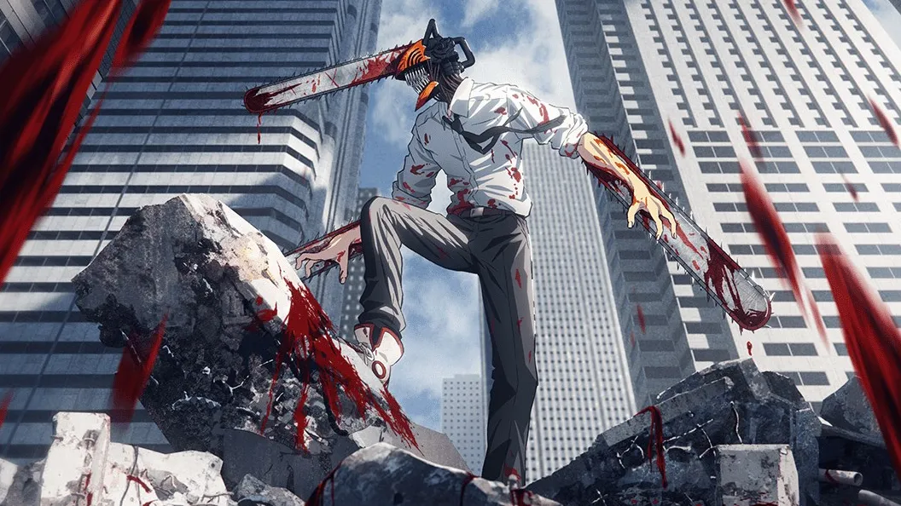

Trailer
Quick story
Chainsaw Man follows the story of Denji, a young man burdened with his deceased father's debt. In a world plagued by devils, Denji works as a devil hunter to pay off the debt, but his life takes a drastic turn when he merges with his pet devil, Pochita. This transformation grants him the ability to transform parts of his body into chainsaws, making him a formidable fighter against devils. As Denji navigates his new life, he encounters various devils, hunters, and conspiracies, all while seeking a sense of freedom and a better life. The series explores themes of ambition, sacrifice, and the human condition against a backdrop of intense action and dark humor.